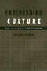

|
Doing
Comparable Worth
Gender, Class, and Pay Equity
Acker,
Joan
Career of Distinguished Scholarship Award, American Sociological
Association |

|
Death
in the Dining Room and Other Tales of Victorian Culture
Ames,
Kenneth L.
Henry-Russell Hitchcock Award, Victorian Society of America |

|
Public
Art in Philadelphia
Bach,
Penny Balkin
National Gold Ink Pewter Award
Philadelphia Book Clinic Certificate of Award |
|
Separate
Societies
Goldsmith,
William W. and Edward J. Blakely, foreword by Harvey Gantt
Paul Davidoff Award, Association of Collegiate Schools of
Planning |

|
Dust
to Dust
A Doctor's View of Famine in Africa
Heiden,
David
Philadelphia Book Clinic Certificate of Award |

|
Latinos
and the U.S. Political System
Two-Tiered Pluralism
Hero,
Rodney E.
Ralph J. Bunche Award, American Political Science Association |

|
Engineering
Culture
Control and Commitment in a High-Tech Corporation
Kunda,
Gideon
Association of American University Presses Book Jacket Award |

|
Running
Scared
Masculinity and the Representation of the Male Body
Lehman,
Peter
Book Alert's University Press Book of Choice, November |

|
Dangerous
Passage
The Social Control of Sexuality in Women's Adolescence
Nathanson,
Constance A.
Eliot Freidson Outstanding Book in Medical Sociology, American
Sociological Association |

|
Psychology
of Judgment and Decision Making
Plous,
Scott
8th Annual William James Book Award, American Psychological
Association |

|
The
Poverty of American Politics
A Theoretical Interpretation
Roelofs,
H. Mark
Harrington Award from the Caucus for a New Political Science |

|
To
Save China, To Save Ourselves
The Chinese Hand Laundry Alliance of New York
Yu,
Renqiu
Philadelphia Book Clinic Certificate of Award
Outstanding Book in History Award, Association for Asian American
Studies |

|
Chinatown
The Socioeconomic Potential of an Urban Enclave
Zhou,
Min, foreword by Alejandro Portes
Honorable Mention Robert E. Park Award, American Sociological
Association |